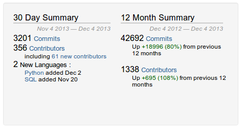
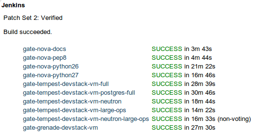

Very Large Development
How to run code review for
1000+ Open Source Developers
Joe Gordon
About Me
 Developer @
Developer @ 
- Full time upstream OpenStack developer
- nova-core
- ATC since Essex
- contact information
- jog0 on freenode
- github.com/jogo
- launchpad.net/~jogo
Very Large Development
As defined by ohloh by BLACK DUCK
“ Very large, active development team
Over the past twelve months, 1338 developers contributed new code to OpenStack. This is one of the largest open-source teams in the world, and is in the top 2% of all project teams on Ohloh.
For this measurement, Ohloh considers only recent changes to the code. Over the entire history of the project, 1808 developers have contributed.”
What is ?
Largest Open Source  project?
project?
(That I know of)
 is 966,104 lines of python code
is 966,104 lines of python code
and OpenStack is 1,860,725!
APIS

APIS

Architecture

Who is OpenStack
Deployment scale
The Data center

(Rackspace data center)
Development scale
By the Numbers

Graphs
In January 2011
- 61 Contributors
- 71,181 lines of code
Pros and Cons
of using
Pros
- fast to develop
- approachable language
- 'fun'
Cons
- type checking
- other static analysis
- concurrency
Development Process
Life of a github Patch Today
- Fork repo
- Write code, test code and push to your github repo
- Submit a pull request
- travis-ci tests patch
- Patch is reviewed
- Patch is amended to address any negative comments
- Code is merged
- travis-ci runs on trunk
Where we started
Launchpad (bzr and all)
(3 years ago)
Review Process Evolution
Gerrit
Gate pep8 + unit tests
Gate pep8 + py26, py27, integration tests
Gate + Check
Current
Life of an OpenStack Patch Today
- Code is written and tested locally
- Submitted for code review
- Code is automatically tested on submission
- Code is peer reviewed
- Patch is amended to address any negative peer reviews
- Code is approved (or rejected)
- Code is re-tested as it will be merged
- Code is merged
Today
Principles
- Never break trunk
- Master branch is always green
- Developers are never blocked on broken trunk
- Transparency
- Automate everything
- Egalitarian
- Be Strict. Reduce burden on reviewers
Tools
- Work Flow
- Testing
- Integration Testing
- Communication
Work Flow
- Gerrit
- git-review
- Jenkins
Testing
- tox
- testrepository
- Automated code quality checks: flake8+pep8+pyflakes+hacking
Testing
automated code quality checks
- E1** indentation
- E2** white space
- E5** line length
- F401 module imported but unused
- F821 undefined name name
- H103 correct apache 2 license
- H30* import rules
- H301 docstring should not start with a space
Integration Testing
- devstack
- zuul
- recheck
- elastic-recheck
Integration Testing
elastic-recheck
- Measure integration tests in percent failure, not black and white
- Hard to debug transient failures - 10s of MB of logs
- Trivial to classify failures once have elastic search query

Communication
- lauchpad
- etherpad
- pastebin
- irc
- mailing list
Suggestions for other tools?
Other ways we make development scale
Shrink Project Scope
OpenStack started with just two projects - Nova and Swift.
Now the same functionality is spread out over 6 projects.
Nova, Swift, Glance, Keystone, Cinder, Neutron
Thank You
Questions?
Statistics from ohlo.net
Powered by reveal.js